электронный
ресурс по учебной дисциплине
1-40 02 01 «Вычислительные машины, системы и сети»
|
||
| Оглавление | Программа | Теория | Практика | Контроль знаний | Об авторах | ||
Булевы функции
12.1. Способы задания булевой функции
Пусть х1, х2, ... , хn – некоторые булевы переменные, т. е. переменные, принимающие значение из множества {0, 1}. Упорядоченную совокупность булевых переменных (х1, х2, ... , хn) можно рассматривать как n‑компонентный булев вектор х. Число компонент вектора определяет его длину, или размерность. При фиксации значений всех переменных получается набор значений переменных (х1, х2, ..., хn), задаваемый булевым вектором длины n, состоящим из констант 0 и 1. Очевидно, 2п – число всех таких векторов. Они образуют булево пространство. Булевой функцией называется функция f : {0, 1}n → {0, 1}. Областью определения булевой функции является булево пространство М = {0, 1}n, областью значений – множество {0, 1}.
Задание булевой функции f на булевом пространстве М делит его на две части: Mf1 – область, где функция принимает значение 1, и Mf0 – область, где функция принимает значение 0. Множество Mf1 называется характеристическим множеством функции f.
Универсальным способом задания для любой дискретной функции является табличный способ. Таблица, представляющая функцию и называемая таблицей истинности, имеет два столбца. В левом столбце перечислены все наборы значений аргументов, в правом столбце – соответствующие им значения функции. Примером задания булевой функции от трех аргументов является табл. 12.1.
Таблица 12.1
Задание функции f(x1, x2, x3)
x1 |
x2 |
x3 |
f(x1, x2, x3) |
0 |
0 |
0 |
0 |
0 |
0 |
1 |
1 |
0 |
1 |
0 |
1 |
0 |
1 |
1 |
1 |
1 |
0 |
0 |
0 |
1 |
0 |
1 |
1 |
1 |
1 |
0 |
0 |
1 |
1 |
1 |
1 |
Для задания булевой функции можно ограничиться перечислением элементов ее характеристического множества Mf1. Множество Mf1 задается булевой матрицей, строки которой представляют элементы этого множества. Следующая матрица, задающая приведенную выше функцию, является матричным способом представления булевой функции:
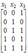.
Компактность представления характеристического множества Mf1 можно повысить, используя троичные векторы, компоненты которых могут принимать в качестве своих значений кроме символов 0 и 1 также символ «–». В этом случае значения булевой функции будут задаваться не на отдельных элементах, а на интервалах пространства переменных х1, х2, ..., хn. Чтобы определить понятие интервала булева пространства, введем отношение ≤ на множестве булевых векторов.
Булевы векторы а = (а1, а2, … , ап) и b = (b1, b2, … , bп) находятся в отношении ≤ (а ≤ b) и говорят, что а меньше b, если аi ≤ bi для любого i = 1, 2, … , п, в противном случае они несравнимы. При этом считается, что 0 ≤ 1. Тогда интервалом булева пространства называется множество векторов, среди которых есть минимальный и максимальный векторы, а также все векторы, меньшие максимального и большие минимального. Интервал представляется троичным вектором, который задает множество всех булевых векторов, получаемых заменой символа «–» на 1 или 0.
Троичная матрица эквивалентна булевой матрице, получаемой из нее заменой каждой троичной строки на представляемую ею совокупность булевых строк с последующим устранением повторяющихся строк. Приведенная выше булева матрица оказывается эквивалентной троичной матрице
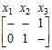,
которая представляет ту же булеву функцию f (x1, x2, x3). Такой способ задания булевой функции называют еще интервальным. Представление булевой функции троичной матрицей не однозначно, т. е. для одной и той же булевой матрицы существует в общем случае не одна эквивалентная ей троичная матрица.
Две троичные матрицы эквивалентны, если они эквивалентны одной и той же булевой матрице, т. е. если они представляют одну и ту же булеву функцию.
Векторное задание булевой функции представляет собой булев вектор, компоненты которого соответствуют наборам значений аргументов. Эти наборы упорядочиваются обычно согласно порядку чисел, двоичные коды которых они представляют. Рассмотренная выше булева функция f(x1, x2, x3) представляется вектором (0 1 1 1 0 1 0 1), показывающим, что функция принимает значение 0 на наборах (0 0 0), (1 0 0), (1 1 0) и значение 1 на наборах (0 0 1), (0 1 0), (0 1 1), (1 0 1), (1 1 1). Заметим, что этот вектор совпадает с правым столбцом табл. 12.1.
Если значения булевой функции определены для всех 2n наборов значений вектора x, она называется полностью определенной, в противном случае – не полностью определенной, или частичной. Задание не полностью определенной булевой функции f разбивает булево пространство на три множества: кроме Mf1 и Mf0 в нем присутствует множество Mf –, где значения функции f не определены. Для задания частичной булевой функции необходимо задать не менее двух множеств. Обычно это Mf1 и Mf0.
Далее будет рассмотрен алгебраический способ задания булевой функции.
12.2. Элементарные булевы функции и алгебраические формы
Рассматривая векторную форму задания булевой функции, легко определить число булевых функций от п переменных – это число всех 2n-компонентных булевых векторов, т. е. 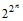. Однако это число учитывает также функции и от меньшего числа аргументов. Любую функцию от п аргументов можно считать функцией от большего числа аргументов. Для этого вводится понятие существенной зависимости и несущественной зависимости. Функция f(х1, х2, ... , хn) существенно зависит от аргумента хi, если
f(х1, х2, ... , хi – 1, 0, хi + 1, … , хn) ≠ f(х1, х2, ... , хi – 1, 1, хi + 1, … , хn).
Переменная хi в этом случае называется существенным аргументом. В противном случае она является несущественным или фиктивным аргументом.
Элементарными булевыми функциями являются функции от одной и двух переменных. Число функций от одной переменной равно 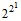= 4. Эти функции представлены в табл. 12.2. Две из них, f0 и f3, являются константами 0 и 1, переменная x для них является несущественным аргументом. Функция f1 также является тривиальной, любое ее значение совпадает со значением аргумента: f1(x) = x. Нетривиальной функцией является функция f2(x) =¬x, называемая отрицанием, или инверсией. Ее значение всегда противоположно значению аргумента x. Из табл. 12.2 видно, что ¬0 = 1 и¬1 = 0.
В табл. 12.3 приведены все булевы функции fi (х1, х2) от двух аргументов. В левом столбце показаны их выражения в терминах нескольких функций, принятых за основные.
Таблица 12.2
Булевы функции от одного аргумента
x |
0 |
1 |
||
f0 = 0 |
0 |
0 |
||
f1 = x |
0 |
1 |
||
f2 =¬x |
1 |
0 |
||
f3 = 1 |
1 |
1 |
||
Таблица 12.3
Булевы функции от двух аргументов
Элементарные функции имеют особое значение в теории булевых функций, поскольку каждая из них может быть выражена одноместной или двухместной алгебраической операцией. Все операции, представленные в табл. 12.3, составляют алгебру логики. Любая булева функция от любого числа аргументов может быть представлена формулой алгебры логики. Формулу, содержащую более чем одну операцию, можно рассматривать как суперпозицию элементарных функций. Под суперпозицией функций понимается использование одних функций в качестве аргументов других функций. Для булевых функций это является возможным благодаря совпадению области значений функций с областями значений их аргументов. Таким образом, алгебраическое задание булевой функции представляет собой формулу, по которой вычисляется значение этой функции. Понятие формулы определим индуктивно следующим образом:
1) каждый символ переменной есть формула;
2) если А и В – формулы, то формулами являются ¬А и (А ∗ В), где ∗ – любая операция алгебры логики;
3) других формул нет.
Для установления порядка выполнения операций в формулах используются скобки. При отсутствии скобок порядок устанавливается согласно приоритетам операций. Первым приоритетом обладает операция отрицания, затем выполняется ∧. Третьим приоритетом обладают операции ∨ и ⊕, четвертым приоритетом – операции ~ и →. Для упрощения написания формул иногда символ конъюнкции опускается. Процесс вычисления значений функции f(x1, x2, x3) = 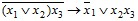 по ее формуле покажем с помощью табл. 12.4, где последовательность столбцов соответствует порядку выполнения операций.
Таблица 12.4
Вычисление по формуле
Две разные формулы могут представлять одну и ту же функцию. Такие формулы называются равносильными. Если А и В – равносильные формулы, то А = В. В этом случае, если А является частью другой формулы, то вместо нее можно подставить В, в результате чего получится формула, равносильная исходной.
Алгебра, содержащая только три операции ¬ , ∧ и ∨, называется булевой, так же как и формула, представляющая некоторую композицию этих операций. Легко проверить по табл. 12.3 следующие основные законы булевой алгебры.
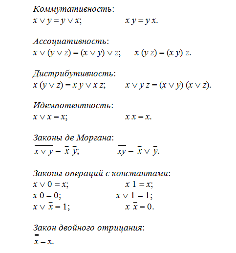Здесь действует принцип двойственности, т. е. для каждой пары формул, представляющих тот или иной закон, справедливо следующее утверждение: одна из формул получается из другой взаимной заменой всех символов конъюнкции на символы дизъюнкции, всех нулей – на единицы и всех единиц – на нули.
На основании этих формул выводятся следующие соотношения.
Закон поглощения:
х ∨ х у = х; х (х ∨ у) = х.
Действительно,
х ∨ х у = х 1 ∨ х у = х (1 ∨ у) = х1 = х;
х (х ∨ у) = х х ∨ х у = х ∨ х у = х.
Закон простого склеивания:
х у ∨ х¬у = х; (х ∨ у) (х ∨¬у) = х.
Левая формула выводится с помощью закона дистрибутивности конъюнкции относительно дизъюнкции: х у ∨ х¬у = х(у ∨¬у) = х. Для вывода правой формулы достаточно раскрыть скобки и применить законы идемпотентности и поглощения.
Закон обобщенного склеивания:
х у ∨¬х z = х у ∨¬х z ∨ y z.
Эту формулу можно вывести следующим образом:
х у ∨¬х z ∨ y z = x y ∨¬x z ∨ y z (x ∨¬x) = x y (1 ∨ z) ∨¬x z (1 ∨ y) = x y ∨¬x z,
а если подставить у = 1, то получим
х ∨¬х z = х 1 ∨¬х z ∨ 1 z = х ∨ z.
Все операции алгебры логики можно выразить через булевы операции. Справедливость следующих формул можно доказать простой подстановкой значений из табл. 12.3:
х ⊕ у = x¬y ∨¬x y;
х ~ у =¬x¬y ∨ x y;
х → у =¬x ∨ y.
Пользуясь этими формулами, построим булево выражение, эквивалентное формуле ((х → у) ∨ (х ⊕ z))¬y:
((х → у) ∨ (х ⊕ z))¬y = (¬x ∨ y ∨ x¬z ∨¬x z)¬y = (¬x ∨ y ∨¬z)¬y =¬x¬y ∨¬y¬z.
12.3. Интерпретации булевой алгебры
Рассматриваемая абстрактная булева алгебра имеет ряд интерпретаций, используемых в различных приложениях.
Булева алгебра множеств описана в гл. 1. Здесь значениями переменных служат подмножества универсального множества U. Константам 1 и 0 соответствуют множества U и ∅. Все соотношения, приведенные в гл. 1, совпадут с основными законами абстрактной булевой алгебры, если операцию дополнения множества заменить на операцию отрицания, а операции ∩ и ∪ (пересечения и объединения множеств) – соответственно на операции ∧ и ∨ (конъюнкции и дизъюнкции).
Интерпретацией абстрактной булевой алгебры является также алгебра событий, используемая в теории вероятностей. Алгебру событий составляют семейство подмножеств множества элементарных событий U и определяемые над этими подмножествами операции отрицания (¬), объединения (∪) и пересечения (∩). Любое событие может произойти или не произойти (наступить или не наступить). Отсутствие события А обозначается как ¬А. Событие, состоящее в наступлении обоих событий А и В, называется произведением событий А и В и обозначается А ∩ В или АВ. Событие, состоящее в наступлении хотя бы одного из событий А и В, называется суммой событий А и В и обозначается А ∪ В.
Еще одной интерпретацией является алгебра переключательных схем. Переменным этой алгебры соответствуют элементы переключательной схемы – переключатели. Переключательный элемент, состояние которого представляется булевой переменной а, может быть замкнут, тогда через него течет ток и а = 1. Если он разомкнут, то тока нет и а = 0. По состояниям переключателей в схеме можно определить, проходит ли по данной схеме ток. На рис. 12.1, а изображено последовательное соединение двух переключателей а и b. Данная схема будет пропускать ток в том и только в том случае, когда оба переключателя замкнуты, т. е. если a ∧ b = 1. На рис. 12.1, б изображено параллельное соединение переключателей а и b. Ток будет протекать, если замкнут хотя бы один из переключателей, т. е. если a ∨ b = 1.
Два или более переключателей можно условно связать таким образом, чтобы они замыкались и размыкались одновременно. Такие переключатели обычно обозначаются одним и тем же символом. Каждому переключателю можно поставить в соответствие другой переключатель так, чтобы когда один из них замкнут, другой был разомкнут. Если один из них обозначить буквой а, то другой примет обозначение ¬а. В схеме на рис. 12.2 пойдет ток, если и только если а b ∨ b¬c ∨¬a¬b = 1. Левая часть этого уравнения представляет структуру схемы.
Рис. 12.1. Примеры соединения переключателей: а) последовательное;
б) параллельное
Другим типом переключательной схемы является схема из электронных логических элементов, где булевы переменные представляются сигналами в виде высокого или низкого потенциала, а элементы (рис. 12.3) реализуют операции отрицания, конъюнкции и дизъюнкции.
Рис. 12.2. Пример переключательной схемы
Если высокому потенциалу поставить в соответствие 1, а низкому – 0, то на выходе элемента дизъюнкции окажется высокий потенциал тогда, когда хотя бы на одном из входов элемента присутствует высокий потенциал. Низкий потенциал появится на выходе элемента, когда оба его входа будут иметь низкий потенциал.
Рис. 12.3. Логические элементы, реализующие операции ¬ , ∧ и ∨
На выходе элемента конъюнкции создастся высокий потенциал тогда и только тогда, когда оба его входа будут иметь высокий потенциал.
Выход элемента отрицания примет высокий потенциал в том и только том случае, когда на его входе будет низкий потенциал.
Рис. 12.4. Схема, реализующая операцию «сложение по модулю два»
Отдельные логические элементы можно соединять в схемы, причем структура схемы представляется при этом выражением булевой алгебры. Так, схема, реализующая сложение по модулю два, показана на рис. 12.4. Ее структура представлена правой частью равенства a ⊕ b = a¬b ∨¬a b.
В исчислении высказываний переменными являются высказывания, принимающие истинные или ложные значения, которые соответствуют константам 1 и 0. Символы операций и их названия в данном случае совпадают не случайно. На основе исчисления высказываний можно выделить булеву алгебру высказываний, которая является одной из интерпретаций абстрактной булевой алгебры. Высказывание¬a истинно тогда и только тогда, когда а ложно. Оно читается как «не а» или «не верно, что а». Высказывание a ∧ b, читаемое как «a и b», истинно тогда и только тогда, когда истинны оба высказывания a и b. Высказывание a ∨ b читается как «a или b». Оно истинно, если хотя бы одно из высказываний a и b истинно, и ложно, если оба высказывания ложны.
Другие операции алгебры логики также могут иметь интерпретации в исчислении высказываний. Союз «или» может быть использован при прочтении высказывания a ⊕ b. Наряду с «a либо b» его можно читать как «или a, или b». Оно истинно, когда истинно только одно из высказываний a и b, и ложно, когда оба высказывания истинны или оба ложны. Высказывание a ~ b истинно тогда и только тогда, когда значения истинности высказываний a и b совпадают. Это высказывание может быть прочитано следующим образом: «a равносильно b», «a, если и только если b», «a тогда и только тогда, когда b». Импликация a → b читается как «если a, то b». Это высказывание ложно, когда а истинно, а b ложно. Во всех остальных случаях оно истинно.
12.4. Представление операций над булевыми функциями операциями над их характеристическими множествами
Пусть некоторые булевы
функции f1 и f2 заданы с помощью
характеристических множеств  и 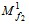. Чтобы получить
характеристическое множество результата
некоторой операции над f1 и
f2,
надо выполнить соответствующую
теоретико-множественную операцию над
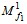 и
и 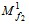. Чтобы получить
характеристическое множество результата
некоторой операции над f1 и
f2,
надо выполнить соответствующую
теоретико-множественную операцию над
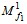 и  ,
привлекая, если это необходимо, множества
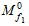 и 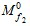,
которые являются дополнениями множеств
и .
Таким образом,
,
привлекая, если это необходимо, множества
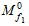 и 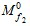,
которые являются дополнениями множеств
и .
Таким образом,
13.1. Дизъюнктивные нормальные формы
Переменные х1, х2, … , хп и их инверсии назовем литералами и введем обозначение аσ, где аσ = а, если σ = 1, и аσ =¬а, если σ = 0. Элементарной конъюнкцией Ki является многоместная конъюнкция попарно различных литералов, т. е. Ki = 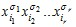. К элементарным конъюнкциям относятся также одиночные литералы и константа 1 – конъюнкция, состоящая из пустого множества литералов. Число литералов r элементарной конъюнкции называется ее рангом. Элементарная конъюнкция называется полной относительно переменных x1, x2, …, xn, если она содержит символы всех переменных (со знаком отрицания или без него). Ранг таких конъюнкций равен n.
Дизъюнктивная нормальная форма (ДНФ) – это выражение вида 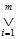Ki, т. е. дизъюнкция элементарных конъюнкций. Примером дизъюнктивной нормальной формы является выражение х1¬х2 ∨ х2 х3 х4 ∨¬х1 х3, где две конъюнкции имеют ранг 2 и одна конъюнкция – ранг 3. Одна элементарная конъюнкция также может считаться ДНФ.
13.2. Дизъюнктивное разложение Шеннона
Т е о р е м а Ш е н н о н а. Любая булева функция f(x1, x2, …, xn) при любом т (1 ≤ m ≤ n) может быть представлена в следующем виде:
f(x1, x2, …, xn) =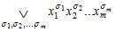f(σ1, σ2, … , σm, xm+1, … , xn), (13.1)
где дизъюнкция берется по всевозможным 2m наборам значений переменных x1, x2, … , xm.
Для доказательства теоремы подставим в обе части равенства (13.1) произвольный набор (α1, α2, …, αn) значений всех n переменных. Заметим, что xσ = 1 только при x = σ и из всех 2m конъюнкций 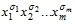 правой части формулы (13.1) значение 1 примет единственная конъюнкция, а именно та, для которой σ1 = α1, σ2 = α2, … , σm = αm. Остальные конъюнкции будут равны 0. Отсюда получим тождество
f(α1, α2, … , αn) = 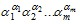f (α1, α2, … , αm, αm+1, … , αn).
Представление (13.1) называется дизъюнктивным разложением функции f (x1, x2, … , xn) по переменным x1, x2, … , xm. Получаемые в результате подстановки констант α1, α2, … , αт вместо переменных x1, x2, … , xm функции f(α1, α2, … , αm, xm+1, …, xn), являющиеся коэффициентами разложения, не зависят от переменных x1, x2, … , xm.
Из теоремы Шеннона непосредственно вытекают два следующих утверждения, соответствующие двум крайним значениям числа т: т = 1 и т = п.
Любая булева функция f(x1, x2, … , xn) при любом i = 1, 2, … , n может быть представлена в следующем виде:
f(x1, x2, … , xn) = xi f(x1, x2, … , xi-1, 1, xi+1, … , xn) ∨¬xi f(x1, x2, … , xi-1, 0, xi+1, … , xn).
Любая булева функция f(x1, x2, … , xn) может быть представлена в следующем виде:
f(x1, x2, … , xn) =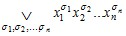f(σ1, σ2, … , σn). (13.2)
Последнее выражение является представлением булевой функции f(x1, x2, … , xn) в совершенной дизъюнктивной нормальной форме (СДНФ). Здесь f(σ1, σ2, … , σn) является значением функции на наборе значений аргументов (σ1, σ2, … , σn), т. е. константой 0 или 1.
Легко построить СДНФ, представляющую произвольную булеву функцию, заданную в табличной форме. Для этого достаточно выделить наборы (σ1, σ2, … , σn), на которых функция принимает значение 1, и для каждого из них ввести в СДНФ полную элементарную конъюнкцию, где любая переменная xi присутствует с отрицанием, если σi = 0, и без отрицания, если σi = 1.
Очевидно, для любой булевой функции f(x1, x2, …, xn), кроме константы 0, существует единственная СДНФ (с точностью до порядка литералов и конъюнкций). Поэтому данная форма представления булевой функции является канонической. Например, СДНФ для функции от трех аргументов, заданной табл. 13.1, имеет следующий вид:
f(x1, x2, x3) = ¬x1 х2¬х3 ∨ x1¬х2¬х3 ∨ x1¬х2 х3 .
Таблица 13.1
Задание функции f (x, y, z)
x |
y |
z |
f (x, y, z) |
0 |
0 |
0 |
0 |
0 |
0 |
1 |
0 |
0 |
1 |
0 |
1 |
0 |
1 |
1 |
0 |
1 |
0 |
0 |
1 |
1 |
0 |
1 |
1 |
1 |
1 |
0 |
0 |
1 |
1 |
1 |
0 |
Константа 1 представляется в виде СДНФ, которая содержит все различные полные элементарные конъюнкции, которые называют конституентами единицы (в литературе используется также термин минтерм). Конституента единицы принимает значение 1 на единственном наборе значений переменных.
13.3. Конъюнктивные нормальные формы
Элементарной дизъюнкцией Di является многоместная конъюнкция попарно различных литералов, т. е. Di = 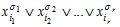. К элементарным дизъюнкциям относятся также одиночные литералы и константа 0 – дизъюнкция, состоящая из пустого множества литералов. Число литералов r элементарной дизъюнкции называется ее рангом. Элементарная дизъюнкция называется полной относительно переменных x1, x2, …, xn, если она содержит символы всех переменных (со знаком отрицания или без него). Ранг таких дизъюнкций равен n.
Конъюнктивная нормальная форма (КНФ) – это выражение вида 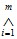Di, т. е. конъюнкция элементарных дизъюнкций. Примером конъюнктивной нормальной формы является выражение (х2 ∨¬х3 ∨ х4)(х1 ∨¬х2). Одна элементарная дизъюнкция также может считаться КНФ.
Согласно принципу двойственности выражение (13.1) можно преобразовать в следующее выражение, которое также справедливо:
f(x1, x2, …, xn) =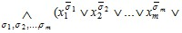f(σ1, σ2, … , σm, xm+1, … , xn)).
Эта формула называется конъюнктивным разложением функции f (x1, x2, … , xn) по переменным x1, x2, … , xm. Справедливость ее может быть доказана так же, как справедливость формулы (13.1). Так же крайними случаями конъюнктивного разложения являются разложение по одной переменной и по всем переменным. Последнее называется совершенной конъюнктивной нормальной формой (СКНФ) и имеет вид
f(x1, x2, …, xn) =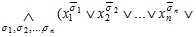f(σ1, σ2, … , σn)).
СКНФ, представляющую произвольную булеву функцию, так же, как ее СДНФ, легко построить по табличному заданию этой функции. Согласно формуле достаточно выделить наборы (σ1, σ2, … , σn), на которых функция принимает значение 0 (если f(σ1, σ2, … , σn) = 1, то весь сомножитель (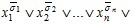1) обращается в 1), и для каждого из них ввести в СДНФ полную элементарную дизъюнкцию, где любая переменная xi присутствует с отрицанием, если σi = 1, и без отрицания, если σi = 0.
Очевидно, для любой булевой функции f(x1, x2, …, xn), кроме константы 1, существует единственная СКНФ (с точностью до порядка литералов и дизъюнкций). Так же, как СДНФ, эта форма представления булевой функции является канонической. СКНФ для функции, которую задает табл. 13.1, имеет следующий вид:
(х1 ∨ х2 ∨ х3)(х1 ∨ х2 ∨¬х3)(х1 ∨¬х2 ∨¬х3)(¬х1 ∨¬х2 ∨ х3)(¬х1 ∨¬х2 ∨¬х3).
Константа 0 представляется в виде СКНФ, которая содержит все различные полные элементарные дизъюнкции, которые называют конституентами нуля (в литературе используется также термин макстерм). Конституента нуля принимает значение 0 на единственном наборе значений переменных.
Графическое представление булева пространства и булевых функций
14.1. Булев гиперкуб
Булево пространство М можно представить в виде графа, вершины которого соответствуют элементам пространства, а ребра представляют отношение соседства между элементами пространства. Два вектора являются соседними, если они отличаются друг от друга значением только одной компоненты. Например, векторы (1 0 0 1) и (1 1 0 1), значения одноименных компонент которых, кроме одной второй компоненты, совпадают, являются соседними. Данный граф, представляющий п-мерное булево пространство, имеет 2п вершин и п2п – 1 ребер. Он называется полным булевым графом, или п-мерным гиперкубом. Рассмотрим построение такого гиперкуба для различных значений размерности пространства.
Одномерный гиперкуб состоит из двух вершин, связанных ребром. Одной из этих вершин приписывается константа 0, другой – константа 1, которые являются кодами данных вершин. Чтобы получить двумерный гиперкуб, надо продублировать одномерный гиперкуб и каждую вершину исходного гиперкуба соединить ребром с ее дублем. Коды вершин построенного двумерного гиперкуба получаются добавлением нулей справа к кодам вершин исходного гиперкуба и единиц – к кодам дублей вершин. Аналогично получаются трехмерный гиперкуб, четырехмерный гиперкуб и т. д. Последовательность гиперкубов от одномерного до четырехмерного представлена на рис. 14.1.
Сформулируем общее правило увеличения размерности гиперкуба: для перехода от т-мерного гиперкуба к (т + 1)-мерному надо исходный т-мерный гиперкуб продублировать и каждую вершину исходного гиперкуба соединить ребром с ее дублем. В полученном гиперкубе к кодам вершин исходного т-мерного гиперкуба добавляются справа нули, а к кодам их дублей – единицы.
В гиперкубе выделяются гиперграни, которые являются порожденными подграфами, представляющими собой гиперкубы меньшей размерности, чем рассматриваемый гиперкуб. Это может быть отдельное ребро, двумерная грань, трехмерный куб и т. п. Подграф, представляющий гипергрань, порождается множеством вершин, составляющих интервал булева пространства.
14.2. Представление булевых функций на гиперкубе
Любой интервал булева пространства является характеристическим множеством функции, выражаемой в алгебраической форме одной элементарной конъюнкцией. Например, конъюнкции х1¬х3 х4 соответствует интервал четырехмерного пространства, представляемый троичным вектором (1 – 0 1). Интервалу приписывается ранг той конъюнкции, которую он представляет.
На гиперкубе булева функция f (х1, х2, ... , хn) задается выделением вершин, представляющих элементы ее характеристического множества Mf1. Например, задание функции f (х1, х2, ... , хn) =¬х1¬х2 х3 ∨¬х1 х2¬х3 ∨¬х1 х2 х3 ∨ х1¬х2 х3 ∨ х1 х2 х3 может быть показано светлыми кружками, как на рис. 14.2.
В изображенном гиперкубе легко заметить две гиперграни, составляющие множество Mf1. Они представляют интервалы, задаваемые троичными векторами (– – 1) и (0 1 –), которые являются характеристическими множествами элементарных конъюнкций х3 и ¬х1 х2 соответственно. Поэтому рассматриваемую функцию можно задать как f (х1, х2, х3) = х3 ∨¬х1 х2. Выполнение простого склеивания над исходной формулой дает тот же результат. Таким образом, графическое представление булевой функции дает возможность непосредственно получить ее задание в виде компактной формулы.
Справедливость формул, выведенных в гл. 12, наглядно демонстрируется на гиперкубе. На рис. 14.3а видно, что ребра, представляемые векторами (0 1 –) и (1 1 –), образуют гипергрань более высокой размерности, представляемую вектором (– 1 –). Это соответствует простому склеиванию: ¬х1 х2 ∨ х1 х = х2.
На рис. 14.3б видно, что интервал, соответствующий конъюнкции х1 х2, поглощает элемент булева пространства, соответствующий конъюнкции х1 х2¬х3. Тем самым демонстрируется простое поглощение, выражаемое формулой х1 х2 ∨ х1 х2¬х3 = х1 х2.
Рис. 14.3в демонстрирует формулу обобщенного склеивания: ¬х1¬х2 ∨ х1¬х3 =¬х1¬х2 ∨ х1¬х3 ∨¬х2¬х3. Продукт обобщенного склеивания (0 – 0) поглощается совокупностью интервалов (0 0 –) и (– 1 0).
14.3. Развертка гиперкуба на плоскости. Карта Карно
Как видно из рис. 14.1, с увеличением размерности булева пространства его графическое представление в виде гиперкуба быстро становится трудным для восприятия. Более удобным является развертка гиперкуба на плоскости. Пример такой развертки трехмерного гиперкуба, которая получена удалением двух ребер и расположением верхних и нижних ребер в две параллельных линии, показан на рис. 14.4. На этом же рисунке представлена также функция
Еще более удобной формой представления булева пространства является двумерная таблица, которую принято называть картой Карно. Карта Карно имеет ту же структуру, что и развертка гиперкуба на плоскости. Каждая ее клетка соответствует элементу булева пространства. Булеву функцию можно задать расположением нулей и единиц в клетках в соответствии с теми значениями, которые принимает функция на соответствующих элементах булева пространства. Другим способом задания булевой функции на карте Карно является разметка клеток, соответствующих элементам множества Мf1. При этом клетки, соответствующие элементам множества Мf0, остаются пустыми. Оба способа представлены на рис. 14.5, где показан пример задания функции f (х1, х2, х3) = х1 х2 ∨¬х1¬х2 х3. Коды строк и столбцов, из которых составляются коды клеток, представлены отрезками прямых. Отрезок вертикальной прямой возле нижней строки показывает, что переменная х1 в коде этой строки имеет значение 1, а его отсутствие у верхней строки говорит, что в ее коде х1 = 0. Аналогично горизонтальные отрезки показывают значения переменных х2 и х3 в кодах столбцов.
Рис. 14.5. Задание булевой функции с помощью карты Карно
Удобство работы с картами Карно обеспечивается применением кода Грея для кодирования ее строк и столбцов.
Пусть надо закодировать в коде Грея последовательность некоторых объектов, число которых N. Коды этих объектов, так же как и коды в виде двоичных чисел, являются булевыми векторами. Длина кода п должна быть такой, чтобы выполнялось N ≤ 2п, или п = ⎡log2N⎤, где ⎡а⎤ – ближайшее к а сверху целое число. Первому объекту присваивается код, состоящий только из нулей – 0 0 … 0. Далее коды определяются по следующему правилу.
Для получения следующего кода берется последний код и в нем меняется значение той самой правой компоненты, изменение значения которой приводит к новому коду.
Коды соседних в последовательности объектов оказываются, таким образом, отличающимися только значением одной компоненты.
Другой способ построения кода Грея заключается в следующем. Сначала берется последовательность из двух однокомпонентных кодов: (0), (1). Приписав к этой последовательности те же коды в обратном порядке, получим (0), (1), (1), (0). Добавляем слева 0 к элементам исходной последовательности и 1 – к приписанной. Получим (0 0), (0 1), (1 1), (1 0). К этой последовательности приписываем (1 0), (1 1), (0 1), (0 0) и снова добавляем к исходной части слева 0, к приписанной – 1. Получаем (0 0 0), (0 0 1), (0 1 1), (0 1 0), (1 1 0), (1 1 1), (1 0 1), (1 0 0). Эти действия повторяем нужное число раз в зависимости от количества кодируемых объектов.
Благодаря коду Грея, два соседних элемента булева пространства или два соседних интервала расположены на карте Карно симметрично некоторой оси, т. е. отношение соседства элементов булева пространства представляется отношением симметрии в карте Карно. На рис. 14.6 показана шестимерная карта Карно с осями симметрии. Оси симметрии проходят в местах изменения значений переменных в кодах строк и столбцов. Каждая ось имеет свою зону симметрии, ширина которой определяется рангом оси.
Оси, связанной с переменной, наиболее часто меняющей свое значение в последовательности кодов строк (или столбцов), придается ранг 1. Если ось связана с переменной, которая меняет свое значение в два раза меньше, ей приписывается ранг 2, если в четыре раза меньше, – ранг 3 и т. д. Ширина оси симметрии ранга k равна 2k (рис. 14.6).
По карте Карно легко построить упрощенную ДНФ функции, которая задана с помощью этой карты. Для этого надо выделить интервалы, на которых функция принимает значение 1. На карте Карно они представлены единичными областями, симметричными относительно некоторых осей. Каждый интервал должен быть максимальным, т. е. не быть собственным подмножеством другого интервала. Элементарная конъюнкция, соответствующая такому интервалу, не содержит переменных, с которыми связаны данные оси. Если на всем интервале некоторая переменная х имеет значение 0, то она берется с отрицанием, если 1, то без отрицания.
Рекомендуется в первую очередь выделять те максимальные интервалы, где имеется элемент, для которого данный максимальный интервал является единственным, его содержащим. Такие интервалы называются обязательными, а соответствующие элементы – определяющими.
Если пользоваться «жадным» способом, т. е. стараться покрыть одним интервалом как можно большее число элементов, то в полученной ДНФ может оказаться избыточная элементарная конъюнкция, как, например, для функции f(x1 x2 x3 x4) = x1¬x2 x3 ∨ x1 x2 x4 ∨¬x1 x2 x3 ∨¬x1¬x2 x4, представленной картой Карно на рис. 14.7. Самый большой интервал, представленный конъюнкцией х3 х4, покрывается остальными интервалами, поэтому является избыточным.
Примером получения упрощенной ДНФ является получение ее для функции, представленной картой Карно на рис. 14.8, где определяющие элементы отмечены кружками. ДНФ этой функции имеет вид
х2¬х3 х4¬х6 ∨¬х1 х3¬х4 х5 ∨ х2 х3¬х4 х5 ∨ х2 х3 х5 х6 ∨¬х1 х3 х4 х6 ∨¬х1 х2¬х3 х5¬х6
Эта ДНФ является минимальной, поскольку из шести интервалов, покрывающих множество Мf1, пять являются обязательными.
Рис. 14.7. Область Мf1с избыточным максимальным интервалом
Рис. 14.8. Задание булевой функции с помощью карты Карно.
Кружками отмечены определяющие элементы
| (С) БГУИР |